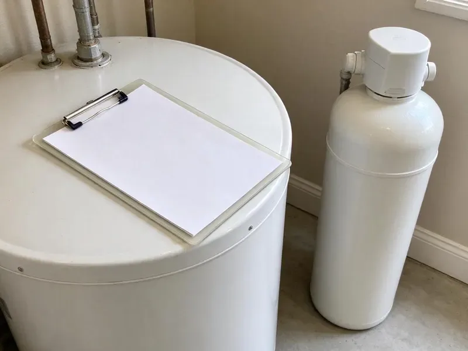

Drainage Services in Augusta, GA
Dealing with drainage trouble in Augusta, GA? HGR Plumbing clears the line fast and finds out why it clogged.
- Same-Day Drain Clearing
- Camera Inspections Available
- Yard and Storm Drainage
- Fast Drainage Repair

Get Water Flowing Where It Belongs in Augusta, GA.
We find out why water is backing up or pooling and put the fix in writing.
Drains, Sewers and Yard Water in Augusta, GA
HGR Plumbing sees drainage problems in two forms: buildup inside the pipes, and storm water outside that has nowhere to go. Heavy thunderstorms and the remnants of tropical systems can dump a lot of rain in a short time, overwhelming gutters, yard drains, and older sewer lines. Our yard drains are sized for heavy storms, not light showers. Small pipes overflow.
Our expertise includes:
- Drain line repairs and replacement
- Hydro jetting for grease and scale
- Camera inspection of main lines

Additional Plumbing Maintenance Services in Augusta, GA
Our maintenance and specialty plumbing services in Augusta, GA protect your home year-round and extend the life of every system.


Customers
Why Choose HGR Plumbing for Drainage Services in Augusta, GA?
Our plumbers diagnose indoor drain problems with cameras and outdoor problems with a site walk. Roof area, slope and soil type all get checked. From that we can size the drain for a heavy storm and pick a legal outlet.
- Full Service, We handle everything from a sink clog to a yard drain system.
- Right Equipment, Cable machines, jetters, cameras and locators let us fix the cause instead of guessing.
- Licensed & Insured, Every plumber we send is licensed and insured.
Citywide Coverage
Wherever you are in Augusta, our crews can clear an indoor line today or schedule a yard visit within the week. We like to see a yard when it is wet. Seeing where water actually stands and which downspouts overflow tells us more in ten minutes than a dry walk-around does in an hour.
Experienced Team
Our drain technicians run hundreds of drain calls every year. Roots feel different on a cable. They can tell from the camera image whether a line is cast iron with heavy scale, clay with offset joints or PVC with a belly, and they explain what that means for your house in plain words.
Safety-First Approach
Jetting and cable equipment is run by trained technicians in protective gear. Chemical drain cleaners are a hazard for us. Caustic cleaner in a trap can burn skin and eyes, so we flush it out before we cable.
Trusted Certified Augusta Plumbing Services Professionals
At HGR Plumbing, we take pride in licensed, certified plumbing services throughout Augusta, GA. Those papers on the wall mean something. Every repair, install and maintenance visit follows strict safety and quality rules, and the plumbers doing the work carry recognized industry credentials.
Call Us Now PHCC Plumbing Contractor Recognition
PHCC Plumbing Contractor Recognition Better Business Bureau (BBB) Accreditation
Better Business Bureau (BBB) Accreditation Angi Certified Pro
Angi Certified Pro ISO 9001 Quality Management Certification
ISO 9001 Quality Management CertificationDependable Drainage Services in Augusta, GA
Main Line and Sewer Drainage in Augusta, GA
Water coming up in the tub when the washer drains is a classic main line symptom. Backups show up first at the lowest drain. After clearing and camera work, we show you where the problem sits and how deep.

Hydro-Jetting Services in Augusta
A hydro jetter sends water at several thousand psi through a nozzle that scours the full pipe wall. Cables punch through clogs, but jetting removes the grease and scale coating the pipe, which is what keeps causing them. Restaurants need it most. We camera the line first to make sure the pipe is sound enough to jet.
Sewer Camera Inspection in Augusta, GA
Recurring drain trouble needs a camera to see what is going on. We push a waterproof camera through the cleanout and record the trip to the street, and a locator in the camera head lets us mark the exact spot and depth of any problem on your lawn. You get the video. It is a smart step before buying a house.
Drainage System Maintenance in Augusta
Maintenance on a drain system is cheaper than an emergency call. Root-prone sewers get cut every 12 to 18 months and checked on camera. Yard drains get flushed too.
Downspout and Roof Drain Solutions in Augusta
Gutters concentrate a lot of roof water into a few points, often right next to the foundation. Homes are a mix of slab, crawlspace, and basement foundations, and crawlspace homes keep most supply and drain repairs easier to reach. Underground downspout lines carry roof water to a pop-up emitter or dry well, with a cleanout for flushing. An inch of rain on a 1,000 square foot roof sheds roughly 600 gallons. That is a lot of water.
Sink, Tub and Toilet Drain Clearing in Augusta
Kitchen sinks clogged with grease and bathroom drains slowed by hair make up most of our fixture calls. We pull the trap when we can. Toilets get a closet auger, and if that fails, we pull the toilet and clear it from the flange.
Restaurant and Industrial Drain Service in Augusta
Restaurants and industrial buildings send heavier loads down their drains than homes do. Grease interceptors need pumping on a schedule. Kitchen lines get jetted between pump-outs, and we keep a service log for your inspector.

Sump Pump Services in Augusta, GA
A sump pump keeps groundwater out of basements and crawlspaces. Our test covers the float, the check valve and the discharge line. Discharge must go outside. A frozen or buried discharge line is a common reason a working pump still floods the pit.
Drainage Services Near Me in Augusta, GA
Nearby plumbers can come back for a camera check after a repair without charging a long trip fee. We build that check into the job. After a root cutting, we often suggest a second camera run in a year to see how fast the roots return, which tells you whether a repair or a maintenance schedule makes more sense.
Local experience counts in drainage work because slope and soil change from block to block. Clay soil drains slowly. A dry well that works on sandy ground across town may fill and overflow on heavy clay, so we check how the soil drains on your lot before recommending a dry well over a daylight outlet.
HGR Plumbing at a Glance
- Fully licensed plumbing team covering Augusta, GA
- Same-day appointments and 24/7 emergency response
- Clear written estimates, no hidden fees
- 4.9-star rated by 357+ Georgia customers
Augusta Map
Augusta Information
- Population
- 200,884
- Area codes
- 706/470/762
- Service area
- Augusta and towns within a 40 mile drive
- Nearby
- Athens, Macon, Warner Robins, Savannah
Drain lines in Augusta, GA can narrow with scale and buildup. Private wells still serve a sizable share of rural Georgia homes, and iron, sediment, and low pH can shorten the life of pumps, tanks, and copper lines. A jetter removes what a cable misses.
Talk to a Plumber
Reach out to HGR Plumbing for reliable plumbing work done by licensed pros in Augusta, GA.
Our Specialized Plumbing Services in Augusta, GA
At HGR Plumbing, you get every kind of plumbing service from one company across Augusta, GA. From leak detection to full system installs, our team works fast and charges fair prices on homes and commercial properties alike. Take a look at our core services below:


How We Fix Drainage Problems in Augusta, GA
We keep it straightforward: diagnose, explain the options and install a lasting fix.
Request a Quote
Call (770) 470-3778 to schedule drain service. We confirm the time by text.
Diagnosis
A licensed plumber looks at the line, often on camera, and explains the fix.
Clear & Clean
We snake or jet the line based on what we find, then test the flow.
Frequently Asked Questions About Drainage Services in Augusta
Cost depends on whether it is a clog or a construction job. Clearing a fixture or main line is a few hundred dollars at most. Camera inspections, jetting and sewer repairs step up from there, and yard systems like French drains, channel drains or dry wells are priced by the length of drain and the amount of digging involved. You get a written quote first.
Sometimes. It depends on your jurisdiction. Certain areas require dry wells to be registered. Many also set minimum distances from buildings, property lines and septic systems, and a few limit what can drain into them, so we check the local rules for your address before we design one.
Yes, runoff that pools against the house can work against the foundation for years. Homes are a mix of slab, crawlspace, and basement foundations, and crawlspace homes make most supply and drain repairs easier to reach. Moving roof water away and grading the soil to slope off the house takes most of that stress away. Start with the downspouts.
Call when more than one drain is slow, or when a toilet gurgles while the washer drains. Those point to the main line. In the yard, water that stands for a day or more after rain is the cue.
They solve different problems. A French drain collects water that soaks into the soil. A channel drain catches surface water sheeting across concrete, like a driveway that slopes toward the garage, and many yards need one of each because the water arrives both ways during a hard storm.
Drain cleaning usually means a cable machine with a cutting head that bores through the clog. It is quick and cheap. Hydro jetting uses high-pressure water to scrub the whole pipe wall clean of grease, scale and roots, so it lasts longer but costs more and needs a pipe that is in good enough shape to take the pressure.
Drain clearing carries a service guarantee for a set period. Repeat clogs get a return visit. If the camera shows broken or root-filled pipe, we tell you the clearing is temporary.
Watch for water pooling near the house after storms. Washed-out mulch tells you too. Inside, a damp crawlspace, a musty basement or efflorescence on the foundation wall all mean water is reaching the house instead of being carried away, and the problem usually starts at a downspout or a low spot.
What People Are Saying About Our Plumbing Experts?

Mark T.
The floor drain in our office break room backed up every few weeks. The plumber ran a cable, then put a camera down and found roots at a joint about thirty feet out. Seeing it on the screen made the decision easy.
Drain Cleaning · Savannah, GA
Patricia H.
We had a slab leak that two other companies could not find. HGR Plumbing located it in under an hour with a listening device. They rerouted the line through the attic instead of breaking up the floor, so we kept our kitchen tile.
Slab Leak Repair · Stonecrest, GA
Rachel N.
Hard water was leaving white crust on every faucet and our dishwasher was struggling. The tech tested the water, recommended a softener sized for a family of five, and installed it with a bypass valve in one afternoon. The spots on our glasses are gone.
Water Softener · Savannah, GABrian W.
I smelled gas behind the dryer and called right away. The plumber found a corroded flex connector, replaced it, and pressure tested the whole line before turning the gas back on. He let me watch the gauge hold steady for fifteen minutes.
Gas Line Repair · Savannah, GA
Laura S.
Our 40 gallon tank started leaking from the bottom after thirteen years. The tech hauled the old one out, set a new unit with a fresh expansion tank, and had hot water running in about four hours. He took the old tank with him too.
Water Heater Replacement · Warner Robins, GAGreg S.
I manage a small strip center with six tenants. HGR Plumbing handles our annual backflow testing and fixed a recurring clog in the shared sewer line that had been backing into the nail salon. Their reports come in clean and on time.
Commercial Plumbing · Augusta, GA